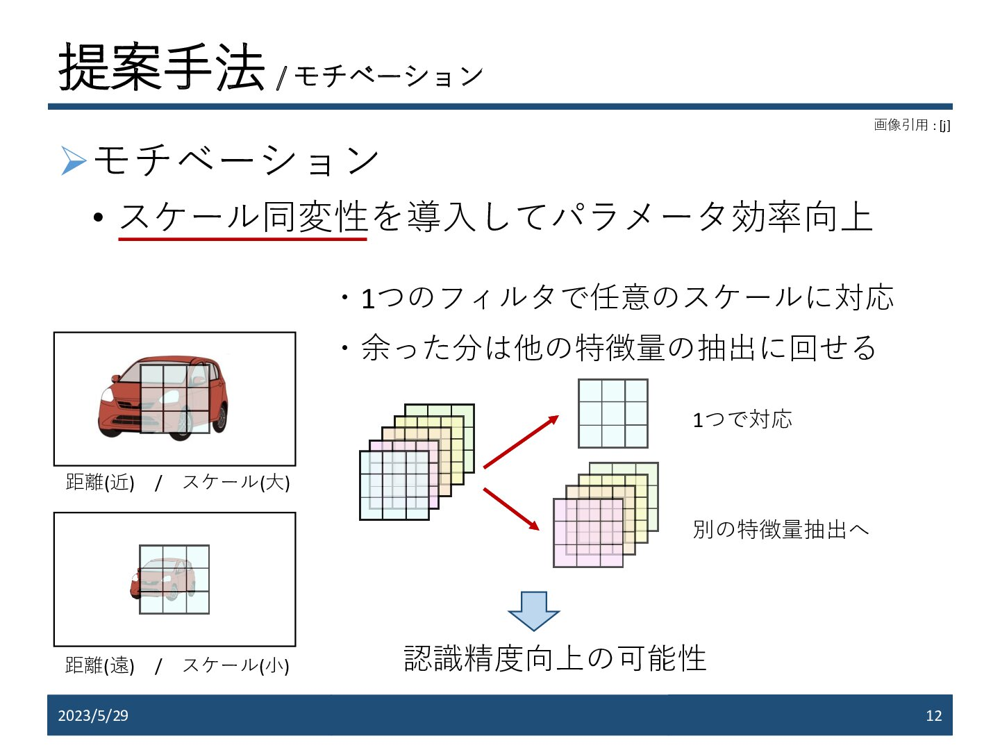
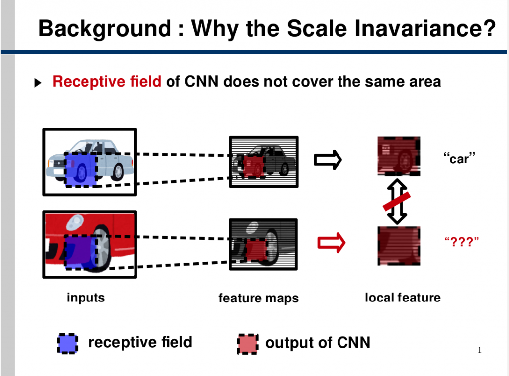

ベイズ深層学習
ベイズ深層学習(Bayesian deep learning)とは，ベイズ的モデル化に基づいて深層学習を設計する手法です．なかでも深層生成モデルは，データ間の因果関係や依存関係をベイジアンネットワークというグラフ形式で表し，その関係を深層学習で実装したものです．いずれも，出力結果の根拠の可視化，意思決定の信頼性（不確実性）の定量化，小規模データの効率的な解析などが可能になります．また生成AIの基盤技術の一部でもあります．

深層生成モデル

述語論理を用いたユーザの意図に忠実なテキスト-画像拡散モデル

深層生成モデルのための非線形かつ可換な画像編集

トポロジカルな構造を考慮した3D点群生成
不確実性定量化

点群セグメンテーションのための距離同変畳み込み
